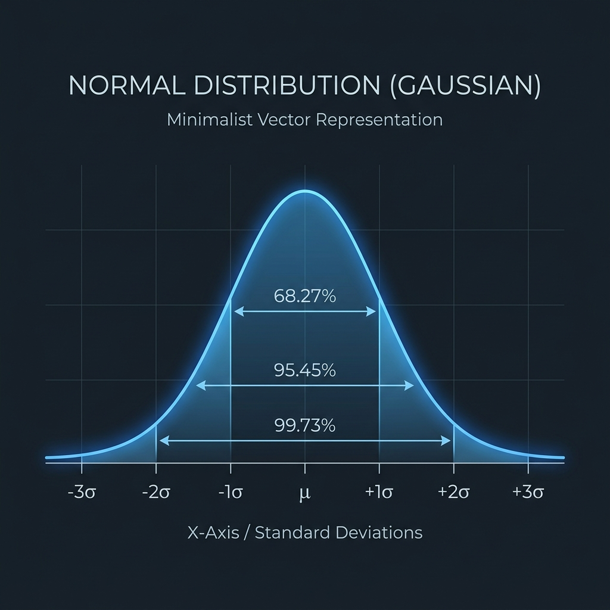

Probability Review II: Tail Bounds
Agenda
- Motivation — why expectation alone is not enough.
- Markov’s Inequality — statement & proof.
- Chebyshev’s Inequality — variance-based concentration.
- Chernoff Bounds — exponential tails via MGFs.
- Comparing the Bounds — when to use which.
Motivation: Expectation is Not Enough
We model an algorithm’s performance (e.g., runtime or quality) as a random variable X. The expected value E[X] is only a single summary statistic.
- Concentrating RV (e.g., Fair Flips): X \sim \text{Bin}(n, 1/2), E[X] = n/2. As n grows, X is almost always close to n/2 (variance is n/4).
- Non-concentrating RV (e.g., Binary Bet): Y = 0 or n with equal probability. E[Y] = n/2, but Y is never close to its expectation.
- Our Goal: Prove that randomized algorithms concentrate (like X) rather than wildly fluctuate (like Y).
Markov’s Inequality
- Key Feature: Only requires the mean (E[X]).
- Universality: Needs no assumption about independence or the distribution.
- Limitation: Often loose, but serves as the foundation for stronger bounds.
Proof of Markov’s Inequality
For a discrete non-negative random variable X:
\begin{aligned} E[X] &= \sum_x x \cdot \Pr(X = x) \\ &\ge \sum_{x \ge a} x \cdot \Pr(X = x) \\ &\ge \sum_{x \ge a} a \cdot \Pr(X = x) \\ &= a \sum_{x \ge a} \Pr(X = x) \\ &= a \cdot \Pr(X \ge a) \end{aligned}
Dividing by a yields \Pr(X \ge a) \le \frac{E[X]}{a}.
Chebyshev’s Inequality
- Key Feature: Uses variance (\mathrm{Var}(X)) to bound deviation from the mean.
- Universality: Works for any distribution with a finite variance.
- Limitation: Decays only polynomially (1/t^2).
Proof of Chebyshev’s Inequality
We apply Markov’s Inequality to the non-negative random variable Y = (X - \mu)^2 with threshold a = t^2:
\Pr\big(|X - \mu| \ge t\big) = \Pr\big((X - \mu)^2 \ge t^2\big)
By Markov’s Inequality:
\Pr\big(Y \ge t^2\big) \le \frac{E[Y]}{t^2} = \frac{E[(X - \mu)^2]}{t^2} = \frac{\mathrm{Var}(X)}{t^2}
This completes the proof.
i.i.d., Law of Large Numbers, & CLT
- i.i.d. random variables: Independent and Identically Distributed
- Example: Repeatedly tossing the same fair coin; each flip X_i \in \{0, 1\} is independent and has the exact same probability \Pr(X_i = 1) = 1/2.
- Law of Large Numbers (LLN): As the number of trials n \to \infty, the sample average converges to the expected value: \frac{1}{n} \sum_{i=1}^n X_i \;\longrightarrow\; E[X] \qquad \text{(Proved via Chebyshev!)}
- Central Limit Theorem (CLT): The sum (or average) of many i.i.d. variables converges to a Normal (Gaussian) distribution N(\mu, \sigma^2), regardless of their original distribution shape.
The Normal Curve & Standard Deviations
- Example (Heights of Indian Men): Adult male height follows a Normal distribution. Let mean \mu = 165\text{ cm} and standard deviation \sigma = 6\text{ cm}.
- Tail Mass (Empirical Rule):
- \ge 1\sigma away (<159 or >171\text{ cm}): \approx 32\% of population.
- \ge 2\sigma away (<153 or >177\text{ cm}): \approx 5\% of population.
- \ge 3\sigma away (<147 or >183\text{ cm}): \approx 0.3\% of population.
- Why Chernoff? CLT is asymptotic (n \to \infty). In algorithms, we need concrete, non-asymptotic exponential bounds for finite n.
Source: ICMR-NIN Reference Guidelines (2020) & NFHS-5 (2019-21) survey data.

Chernoff Bounds: The MGF Recipe
To get exponential tail decay, apply Markov’s Inequality to the exponential function e^{\lambda X} for a tuning parameter \lambda > 0:
\Pr(X \ge t) = \Pr(e^{\lambda X} \ge e^{\lambda t}) \le \frac{E[e^{\lambda X}]}{e^{\lambda t}}
- Moment Generating Function (MGF): M_X(\lambda) = E[e^{\lambda X}].
- Independence Power: If X = \sum X_i are independent, then: E[e^{\lambda X}] = E\Big[\prod_i e^{\lambda X_i}\Big] = \prod_i E[e^{\lambda X_i}] Independence turns the expectation of a product into a product of expectations.
Chernoff Bounds: Multiplicative Form
- Key Feature: Strong exponential decay in the tail.
- Requirement: Strictly requires mutual independence of the trials.
Choosing the Right Bound
| Goal | Best Bound | Input Requirements |
|---|---|---|
| Quick bound, know only mean | Markov | E[X] (RV must be \ge 0) |
| Bound deviation using variance | Chebyshev | \mathrm{Var}(X) |
| Sum of independent trials | Chernoff | Mutual Independence + Mean |
- Coin Flips Comparison (n coins, probability of \ge 3n/4 heads):
- Markov: \le 2/3.
- Chebyshev: \le 16/(3n) (decays as O(1/n)).
- Chernoff: \le e^{-n/12} (decays exponentially fast).
Concept Check
An estimator \hat{p} has E[\hat{p}] = 0.5 and \mathrm{Var}(\hat{p}) \le \frac{1}{4n}. Give the tightest bound on \Pr(\hat{p} \ge 0.75).
Next Lecture
Applications of Tail Bounds & the Probabilistic Method — max load in balls-into-bins, random sampling sample-complexity, and existence proofs.